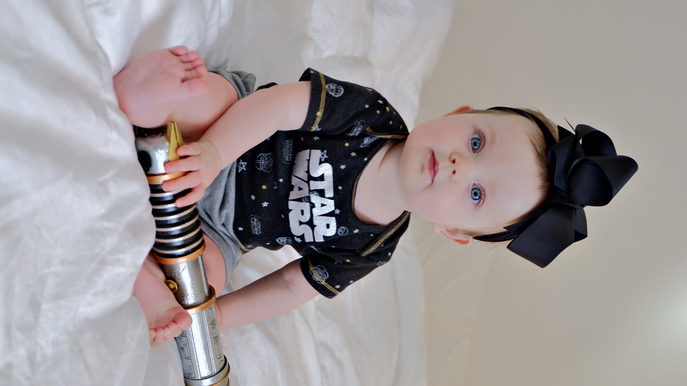

David's Page for Project 2
About Me
Born in Belgium, but raised in Texas, I came to College Station in 2011 pursuing higher education.
I've been employed in Technology since 2013 in Aggieland, and am still going strong.
For the last three years I've served as an Applications Administrator at Brazos County.
I am working as part of a talented team to implement, support, and extend a suite of Oracle Cloud products to serve the County's needs.
I married my wife Hannah about two and a half years ago and we currently live in Bryan with our daughter Lilly.
Our beautiful daughter Lilly, she's 10 months old and growing fast!
